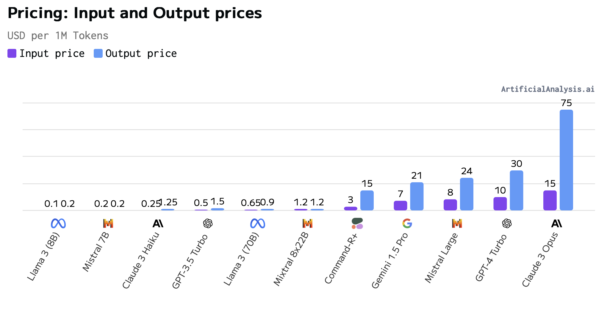

In the last two months we’ve seen releases of flagship LLMs like Llama 3, Mixtral 8x22B, and Claude 3. The title of Mistral’s announcement summarizes the dynamic well: Cheaper, Better, Faster, Stronger. It’s like neverending Christmas for AI developers! But how do you evaluate these models for your use case? This article is a deep dive into evaluations, covering accuracy, speed, cost, customization, context window, safety, and licensing. I focus on text-to-text models, but the principles apply to multimodal models as well.
General language understanding benchmarks
General benchmarks are good for ranking models by their general language understanding and reasoning capabilities. The Hugging Face Open LLM leaderboard scores models on 6 benchmarks.
| Benchmark | Description | Author |
|---|---|---|
| AI2 Reasoning Challenge | Grade school science multiple choice questions | Clark et al. (2018) |
| HellaSwag | Sentence completion task about everyday situations, using examples that are easy for humans but hard for machines | Zellers et al. (2019) |
| Multi-task language understanding (MMLU) | Multiple choice questions across 57 subjects | Hendrycks et al. (2020) |
| TruthfulQA | Multiple choice questions across 38 categories that some humans would answer falsely due to common misconceptions | Lin, Hilton, and Evans (2021) |
| Winogrande | Grammar challenge on pronoun disambiguation using contextual knowledge | Sakaguchi et al. (2021) |
| GSM8K | Grade school math word problems | Cobbe et al. (2021) |
Each benchmark probes a different aspect of language understanding and reasoning. Although no single benchmark perfectly measures a model’s capabilities, together they provide a comprehensive overview of the model’s general abilities. Note that all of them are posed in English by default, though there are translated versions of some benchmarks.
If you intend to use the model for function calling, the Berkeley Function-Calling Leaderboard is a good benchmark. It consists of 2000 question-function-answer triples across multiple programming languages and REST APIs, including cases where the model needs to select which function to call.
Note that the way a benchmark is administered can affect the results. There are two main levers:
- Additional prompt engineering, e.g. chain-of-thought prompts. This boosts reasoning ability at the cost of speed.
- Few-shot sampling. Rather than asking the model just once, the model generates multiple completions and the most common answer is selected. This boosts robustness at the cost of speed. For example Google Gemini (Anil et al. 2023) only beats GPT-4 on the 32-shot setting, not in the 5-shot setting.
A downside of public benchmarks is that cheating is possible by training a model on the test set. An alternative that can’t be gamed in this way is the LLM Arena. It’s a chat-based benchmark where visitors prompt two models at once and vote on the better answer. The relevant metric is an Elo rating, like in chess.
However, picking the model with the highest MMLU or Elo rating isn’t always the best choice. The benchmarks are general and may not reflect the specific requirements of your use case and domain. It may not have seen examples of your data and task during training. So general benchmarks are a good starting point, but not the end of the evaluation process.
Manual evaluations
The easiest way to evaluate a model is to try it out yourself in a chat window. For an unbiased evaluation, you should use the same prompts for all models you’re comparing. At a minimum, I suggest writing down three example prompts and perfect answers to them. This approach has three benefits:
- you may find issues with the task definition
- you can clarify your quality criteria
- you can objectively compare model answers to your gold standard answers
This is easier for tasks with strictly defined answers, such as text classification tasks. With more generative tasks like summarization, it’s necessary to define more fuzzy quality criteria, such as completeness and the absence of irrelevant information.
The LLM Arena has a side by side comparison feature to compare models on your own prompts.
LLM Arena saves all prompts and responses and may redistribute them. Don’t put in sensitive information.
Programmatic evaluations
The downside of manual evaluations is that they are limited to a small number of test cases. More examples are needed to get robust estimates of accuracy. The number depends on the complexity of the task and the desired confidence level. A binary classification task might require 200 examples, while an entity linking task might require 1000 or more examples. I recently published a guide to collecting gold-standard evaluation data.
To administer the test, a script that formats the examples as prompts, receives the model’s responses and compares them to the gold standard is needed. A custom script is the most flexible and lightweight solution, but there are also libraries that can help, such as OpenAI Evals, promptflow, parea, ragas and deepeval.
In the following section I’ll provide a brief overview of model evaluation metrics. A more comprehensive guide is provided by Huang, Li, and Yehdego (2024).
There are two main types of evaluation: structured and unstructured responses.
Evaluation of structured responses
Structured responses consist of a fixed set of possible answers. Examples are multiple choice questions, text classification tasks, and function calling. If a text-to-text model is used, there’s an additional step of verifying that the LLM’s response conforms to the expected structure. Getting the LLM to always follow the format is best done through function calling (e.g. via the instructor library) or fine-tuning.
Once everything’s in the right format, sklearn-metrics is the standard library to calculate the metrics. The most common metrics are accuracy, precision, recall and F1 score.
Evaluation of free form responses
A free form response text is harder to evaluate. Examples are summarization, translation and chatbots. Comparing such answers with a gold answer word-by-word is too strict, as the model may use synonyms or rephrase the answer.
In the pre-LLM era, n-gram overlap metrics were used to evaluate free form responses. The most common are:
- Bilingual Evaluation Understudy (BLEU) for translation
- Recall-Oriented Understudy for Gisting Evaluation (ROUGE) for summarization
They are cheap to compute, but they have well-known limitations: they are sensitive to word order, don’t account for synonyms and don’t measure the writing quality of the generated text.
Recently, LLMs themselves have been used to evaluate LLMs on unstructured tasks. The idea is to ask a second LLM to rate the quality of the first LLM’s response using a pre-defined criterion. In its simplest form, the second LLM is asked to classify the first LLM’s response as good or bad.
Let’s try this out with a simple example of a bot that generates jokes, using Claude 3 Opus as the joke generator and GPT-4 as the joke evaluator.
- Prompt for Opus: “Tell me a joke about AI”
- Opus: ‚ÄúWhy did the AI cross the road? ü§ñüõ£Ô∏è To get to the other dataset! üìäüòÑ‚Äù
- Prompt for GPT-4: ‚ÄúYou are a comedian. I asked a model to tell me a joke about AI. This is the joke it told me:‚ÄùWhy did the AI cross the road? ü§ñüõ£Ô∏è To get to the other dataset! üìäüòÑ‚Äú. Rate this joke on a scale of 1 to 5. Give a short reason and end your answer with a single number.‚Äù
- GPT-4: “This joke plays on the classic”Why did the chicken cross the road?” setup, using a pun related to AI’s data-driven nature. It’s straightforward and mildly amusing but lacks surprise or complexity. Rating: 3”
The prompt to GPT-4 uses three prompt engineering techniques: role play, asking for a reason to get better answers and ending the answer with a single number to make it easier to parse. To measure the humor of Opus, one could substitute the subject “AI” with others like “chickens”, “doctors” or “politicians” and aggregate the GPT-4 ratings.
This is a simple example, but can be extended to more complex tasks. More complex criteria such as fluency, relevance, informativeness and coherence offer a more nuanced evaluation. One of the most common use cases where free form responses occur is retrieval-augmented generation. The ragas library offers a comprehensive set of metrics for LLM-to-LLM evaluation, including optimized prompts for the second LLM.
The downside of LLM-to-LLM evaluation is that the second LLM may not have the ability to judge the quality of the first LLM’s response or have a bias towards certain types of responses.
Answer quality isn’t everything
Practical considerations around deploying the model also come into play: inference speed, cost, customization, safety and licensing. These factors can be more important than the model’s accuracy. The website artificialanalysis.ai is great for comparing models and API providers.
Inference speed
How fast can the model generate responses? This matters most for real-time applications like chatbots. A slow response makes for a poor user experience.
Inference speed is determined by the model, meaning the number and precision of weights. It’s also determined by the hardware used, with higher-end GPUs offering more speed. The efficiency of inference code is also crucial, with libraries like vLLM offering a 2x or greater speedup over the baseline implementation. run.ai has an in-depth analysis of throughput across serving engines and models.
Artificialanalysis.ai benchmarks throughput for a variety of models and providers and visualizes it by model and by provider.
Smaller models, measured by the number of parameters, are faster. Mixture-of-experts models like Mixtral 8x7B have a clever approach to inference: each request only uses a subset of the model, reducing the number of matrix multiplications needed.
The second graph shows throughput for the same model across different providers. The fastest provider offers nearly 10x the throughput of the slowest provider.
Cost
There are two common pricing modes: per-token or per GPU-hour.
Per token pricing
This is typical for models served by an API. The longer the prompt and the response, the greater the cost. Cost for output tokens is typically 2 to 5 times higher than input tokens. Let’s look at an example, using GPT-4 Turbo’s pricing of $10/1M input tokens and $30/1M output tokens.
| Role | Message | Tokens | Cost |
|---|---|---|---|
| User | Translate the following text to German: How are you? | 11 | $0.00011 |
| Assistant | Wie geht es dir? | 5 | $0.00015 |
Note that the cost is per token, not per word. A token is a word or a subword. You can try OpenAI’s free https://platform.openai.com/tokenizer or the tiktoken library to get the token count for a prompt. Note that models with a different tokenizer will have different token counts for the same prompt.
You can save money by using shorter prompts. Fine-tuning can “bake” instructions into a model, foregoing the need to explain the task in each request. However, token prices for fine-tuned models are typically higher than for the base model.
OpenAI recently announced batch inference with 24h turnaround time at 50% off the token price.

Per-token costs vary widely across providers and models. Larger models are more expensive, and major cloud providers charge higher prices than smaller providers. There’s a downward trend in pricing over time, given a fixed model size.
GPU hour pricing
The second case is that you self-host the model. Here, pricing depends on GPU rent (or depreciation of your own GPU). My currently favored GPU provider is Modal. They offer a generous free tier, pricing is competitive, only actually used GPU time is billed and it’s easy to use.
To figure out the actual cost of your workload it’s normally necessary to run your own cost benchmark. There are too many moving pieces, and each can change the cost by a factor of 2 or more: GPU configuration (model, number of GPUs), the LLM, quantization, inference library, timing of inference (batch or live, long term reservation or on demand) and the geographic region.
Customization
Open models running on your own infrastructure offer deeper customization than models served from APIs.
There are three main types of customization:
- Finetuning via SFT, RLHF, DPO or ORPO
- Quantization, meaning reducing the precision of the weights to 16-bit or 8-bit
- Token sampling settings, such as temperature, top-k, nucleus sampling and beam search. For a full overview, check the Hugging Face GenerationConfig documentation
API providers offer only a subset of these options and only for certain models. More knobs to twist is only meaningful if you have the time to actually use them. If your main focus is elsewhere, good presets can be more productive than maximum control. It’s the same reason why many devs choose macOS over Arch Linux.
Context window
The context window is the number of input tokens the model can handle in one go. Higher is better, as it allows the model to reason over more information. Roughly speaking, one page of text is 500 tokens.
This comes with some caveats:
- output token limits are significantly lower than input token limits
- processing a large number of input tokens is expensive
- the model may not be able to actually use the full context, this is referred to the “lost in the middle” problem (Liu et al. 2023)
Safety and fairness
Others have written extensively on safety and fairness evaluation of LLMs. Anthropic’s principle “Helpful, Honest and Harmless AI” is industry-leading in this regard. They provide an evaluation dataset on Hugging Face.
Key questions to ask about a foundation model are:
- Does the model exhibit biases around gender, race, religion or other protected classes?
- Does the model refuse requests to do dangerous or illegal activities?
- Can it be goaded into violating its own principles?
The documentation by the model providers a good place to start. The abscence of consideration of these factors in a foundation model is a red flag.
The actual risk of a model depends on the task. High-risk tasks such as medical diagnosis, legal advice or loan approval require more scrutiny than tasks such as sentiment analysis or summarization. Situations in which models have free-form interaction with users, such as chatbots carry greater potential for harm and also surface area for prompt injection attacks.
Licensing
Broadly, models can be categorized as open source or proprietary. Generally, the more open the better because you can inspect the model, customize it and deploy it on your own infrastructure. In addition, open source models give you ownership of the model, rather than being at the mercy of the provider’s pricing and availability.
The term open source has become muddled in the context of LLMs. The minimum requirement is that the model’s weights are available for download. However, full open source also includes the training data, training code, inference code and documentation. Further, there are a variety of open licenses that can be applied. The MIT license and Apache 2.0 are the most permissive and place the fewest restrictions and duties on the user. Finally, there are custom licenses. Notably, Meta has released the Llama 3 model under a custom license that requires attribution and requires that organzations with more than 700 million monthly active users (effectively only the largest tech companies) to request a commercial license.
LLM Evaluation Checklist
Evaluating LLMs is a multi-faceted challenge. While benchmarks and case studies are valuable, there’s no substitute for hands-on testing in one’s particular domain. To summarize, here’s a checklist for evaluating an LLM:
- ✅ Licensing: Check that the model’s license is compatible with your use case.
- ✅ Customization: Consider the model’s customization options based on the license and your needs.
- ✅ Quality: Start with general benchmarks, then move to manual and programmatic evaluations. Consider structured and unstructured responses.
- ✅ Safety and fairness: Assess the model’s safety and fairness, especially for use cases involving individual judgments or open-ended interaction.
- ✅ Cost: Analyze the cost per token or GPU hour for your usage patterns.
- ✅ Speed: Benchmark the model’s throughput in your setup, whether self-hosted or served from an API. There is often significant optimization potential here.
Being clear about the task and success criteria at every step is key. Writing down arguments and results lets you repeat the analysis for new models and justify your choice in architecture and budget reviews. Sharing benchmark results builds trust by users of your model. Without quantitative tests, their opinion of the model hinges on their first interaction alone.